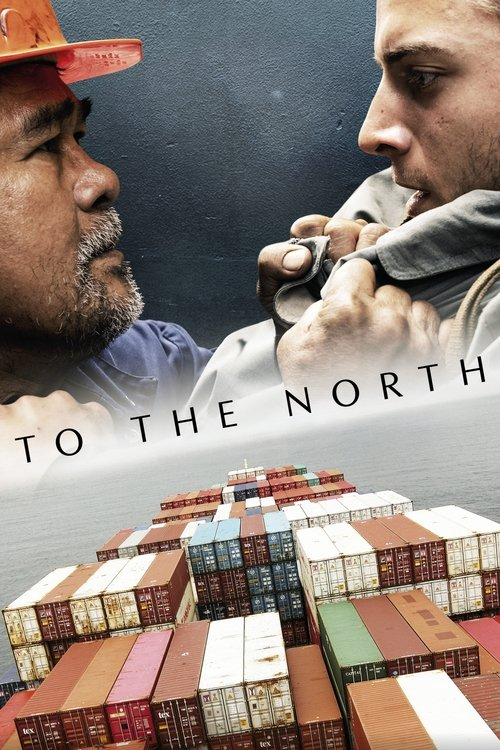

To the North (2025)
الوصف: Based on a true story. 1996, open sea. During his shift on a transatlantic ship’s deck, Joel, a religious Filipino sailor, discovers Dumitru, a Romanian stowaway hidden between some containers. If he is spotted by the Taiwanese officers running the vessel, Dumitru is at risk to be thrown overboard. Joel decides to hide him, as a sign of his gratitude towards God. Soon, a dangerous cat and mouse game begins. When his crew, his own friends, even God itself start to turn their backs on him, Joel learns that he has to face his cruel destiny alone.
الممثلون
- Soliman Cruz (Joel)
- Niko Becker (Dumitru)
- Bart Guingona (Allan)
- Alexandre Nguyen (Captain Tsai)
- Olivier Ho Hio Hen (Officer Chen)
- Dimitar Vasilev (Georgi)
- Noel Sto. Domingo (Bernardo)
- Olivier Chen (Taiwanese Sailor)
- Baldo Gueye (Castaway 1)
- Mahamat Amine Benrachid (Castaway 2)
المخرج: Mihai Mincan
المنتج: Radu Stancu